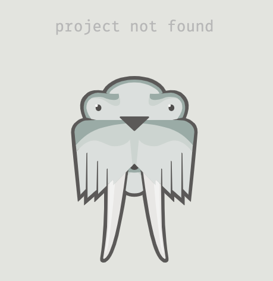

This website is a walkthrough for how to deploy a static site using Surge. We will walk through all of the necessary steps from start to finish, and even cover how you can choose a custom domain as well.
Objectives
- Learn how to do a one-time install of Surge globally on your machine
- Set up your static project for deployment
- Deploy your site with Surge
- Learn how to set up a custom domain
What is a Static Site?
When we use the term "static", we are referring to the fact that the content of the website will not change unless the files are manually updated. The site does not interact with a database or involve any server-side processing. The site will simply display the same information to every user. Typically, static sites are faster and more secure than dynamic sites, but offer less functionality for practical use.
Surge specializes in deploying and hosting these types of sites, and as a result, is extremely light-weight and fast. The feature we love the most is that Surge is extremely easy to use.
Installing Surge
Surge is very easy to install as well. We will perform a global install so that you will always have Surge available to deploy your projects.
Run the following command from any working directory in your terminal:
$
npm install --global surge
Since it is global, this is an install you will only ever need to run once, not on a project-by-project basis.
Preparing Your Project
First off, in order for Surge to work, you'll need to be in the same directory that your index.html resides. You may need to rearrange your files to achieve this. Be aware this may change any relative paths in your project. Once that is complete, you are ready to deploy.
Deployment
In the root directory of your project, run the following command:
$
surge
You will be prompted to set up an account with Surge in your command line. Go ahead and do so.
Next, you'll be asked to confirm the project path. If you are in the root directory of your project, this should already be correct. Just press enter to continue.
You will be automatically assigned a silly (usually) randomly generated domain name for your site. This is ok and we can change it later. Press enter to continue.
Once the deployment completes, you can navigate to the assigned domain to see your project online!
Setting Up a Custom Domain (optional)
We can set up a file in your project that will remember the particular domain you want to use. This step is entirely optional.
Choose a Domain
First, we'll need to see that the URL you want to use is available. Open a browser window and navigate to any surge domain you'd like.
The URL should follow this format:
https://staticdeployment.surge.sh/
If it's available, the URL should show this in the browser:
This means that no one else has deployed a project to this URL, and that it is available to be used. Remember this URL for the next step.
Setting Up a CNAME File
Next, we will create a special file that we can store our chosen domain in.
In the root directory of your project, run this command:
$
touch CNAME
This will create the CNAME file. Go ahead and open it in VSCode. Place your chosen domain into this file on the top line.
Surge will automatically recognize that there is a CNAME file and go there to fetch your domain.
Save the file and run the surge command once again to re-deploy.
$
surge
Now, navigate to your chosen domain to see your project there!
Recap
In this walkthrough, we learned how to use the simplest deployment tool available - Surge. We also learned how to set up a custom domain with Surge by utilizing a CNAME file.